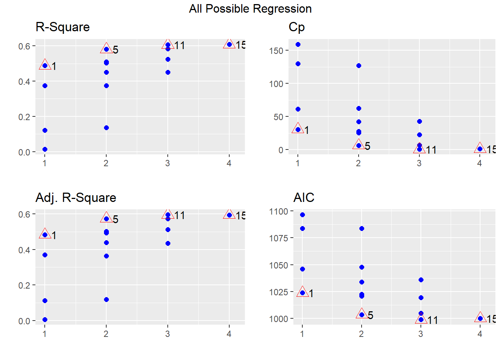
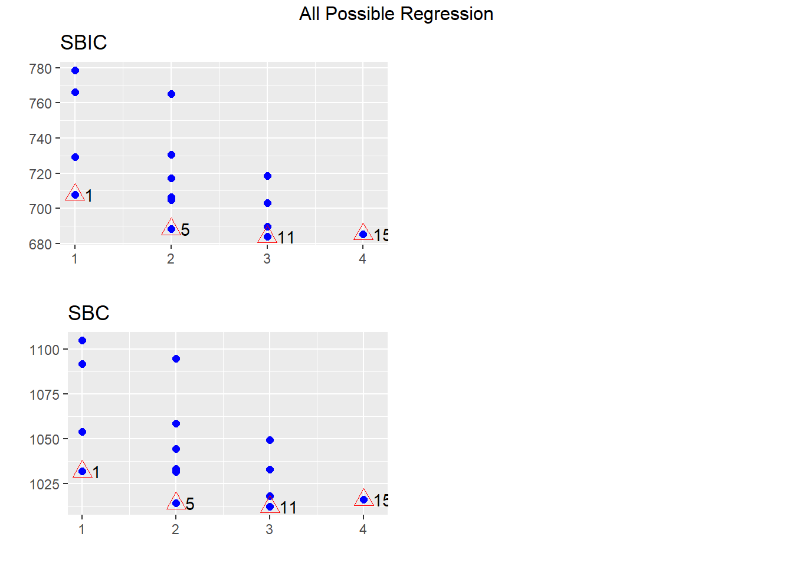
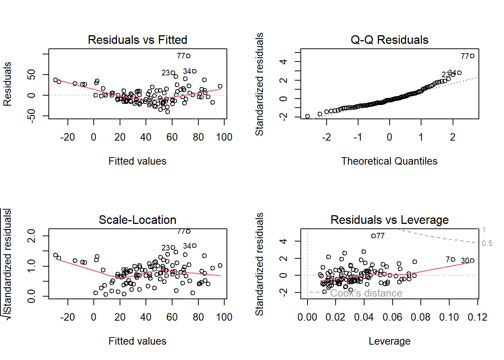

Section 16 Multiple linear regression
Prerequisites
Load the libraries with R:
## Warning: 程辑包'GGally'是用R版本4.3.3 来建造的## Registered S3 method overwritten by 'GGally':
## method from
## +.gg ggplot2## Warning: 程辑包'olsrr'是用R版本4.3.3 来建造的##
## 载入程辑包：'olsrr'## The following object is masked from 'package:datasets':
##
## riversSection example: Surface ozone and meteorological factors

Ozone (O3) occurs both in the Earth’s upper atmosphere and at ground level. Ozone can be good or bad, depending on where it is found. Called stratospheric ozone, good ozone occurs naturally in the upper atmosphere, where it forms a protective layer that shields us from the sun’s harmful ultraviolet rays. Ozone at ground level, however, is a harmful air pollutant, because of its effects on people and the environment, and it is the main ingredient in smog. Check ozone facts from EPA for more.
Ozone is produced when nitrogen oxides and volatile organic compounds react. Meteorological conditions also govern ozone levels. Here we use observations to examine the relationship between ozone and several meteorological factors, including solar radiation, wind speed, temperature, and surface pressure. The data set is available here.
Load the observations via:
# Read ozone and meteorological data
Ozone_data <- read.csv(file = "ozone_data.csv", header=T)
# Check the data
str(Ozone_data)## 'data.frame': 111 obs. of 7 variables:
## $ Solar.Rad : int 190 118 149 313 299 99 19 256 290 274 ...
## $ Wind.Speed : num 7.4 8 12.6 11.5 8.6 13.8 20.1 9.7 9.2 10.9 ...
## $ Temperature: int 67 72 74 62 65 59 61 69 66 68 ...
## $ Pressure : num 1004 995 999 997 996 ...
## $ Ozone : int 41 36 12 18 23 19 8 16 11 14 ...
## $ Month : int 5 5 5 5 5 5 5 5 5 5 ...
## $ Day : int 1 2 3 4 7 8 9 12 13 14 ...Multiple linear regression basics
The model
You can consider the multiple linear regression as an extended simple linear regression. But now, we have more than one independent variables (X1,X2, …, Xk) and one dependent variable (Y). The multiple linear regression model goes as follow:
\[Y= \beta_0 + \beta_1 X_1 + \beta_2 X_2 + ... + \beta_k X_k + \epsilon \] Here the coefficient (e.g., \(\beta_k\)) is interpreted as the estimated mean change in the dependent variable Y corresponding to one unit change in the independent variable (i.e., \(X_k\)), when all other variables remain the same.
The assumptions are the same as those of simple linear regression - existence, independence of Y, linearity, homoscedasticity, and normality of residuals. In fact, the complexity of multiple linear regression is not from the model fitting, but rather from the selection of independent variables. The ideal is to have enough (not more) independent variables to be correlated with the dependent variable, but not with each other.
Multicollinearity
Since we are dealing with more than one independent variables in
multiple linear regression, it is very likely that one independent
variable correlates with another variable. For example, you will find
temperature correlates significantly (r=-0.46)
with wind speed in the section example.

Multicollinearity in a multiple regression model indicates that collinear independent variables are related in some fashion. In other words, multicollinearity can exist when two independent variables are highly correlated. It can also happen if an independent variable is computed from other variables in the data set or if two independent variables provide similar and repetitive results (called redundant variable).
Overfitting
Overfitting means the model contains more parameters than can be justified by the data. In this case, your model begins to describe the random error in the data rather than the relationships between variables. For example, pressure is not significantly correlated with ozone in the section example. This means pressure may bring not much new additional information (called irrelevant variable). Overfitting can produce misleading R2, regression coefficients, and p-values.
Variable selection
Variable selection in multiple regression is the hardest part of model building. The purpose of variable selection to identify the best subset of predictors among many variables to include in a model. The issue is how to find the necessary variables among the complete set of variables by deleting both irrelevant variables (variables not affecting the dependent variable), and redundant variables (variables not adding anything to the dependent variable). Many variable selection methods exist. Each provides a solution to one of the most important problems in statistics. Check Variable Selection in Multiple Regression and Ch. 12 (Strategies for variable Selection) of [RS] for more.
The general theme of the variable selection is to examine certain subsets and select the best subset, which either maximizes or minimizes an appropriate criterion. More specifically, a model selection method usually should include the following three components:
Select a test statistic
Select a criterion for the selected test statistic
Make a decision on removing/keeping a variable
Statistic for variable selection
P-value
If a predictor is significant, it can be included in a regression model.
R2 or adjusted R2
If a predictor can contribute significantly to the overall R2 or adjusted R2, it should be considered to be included in the model.
Mallows’ Cp
This one is widely used in variable selection.
\[C_p = \frac {SSE_p} {MSE_k} - n + 2(p+1) \] where SSEp is the sum of squared errors for the model with p independent variables and MSEk is the mean squared residuals for the model with all k independent variables, n is sample size. We look for a subset of variables with \(C_p \le p+1\), where p is the number of independent variables. If Cp is much bigger than p+1, this indicates a bad fit.
AIC
Akaike Information Criterion (AIC) measures a trade-off between the goodness of model fit (SSE) and model complexity (p). With more independent variables in a regression model, SSE typically would become smaller or at least the same, and therefore the first part of AIC becomes smaller. However, with independent variables, the model would become more complex, and therefore the second part of AIC becomes bigger.
\[AIC = n \mathrm {ln}(\frac {SSE} {n}) + 2p\]
BIC
Bayesian information criteria (BIC) is a variant of AIC with a stronger penalty for including additional variables in the model. The lower the BIC, the better the model.
\[BIC = n \mathrm {ln}(\frac {SSE} {n}) + p \mathrm {ln}(n)\]
Occam’s razor
If all the above statistics are close, and it’s hard to choose from two models, use the one with fewer independent variables.
All possible subsets approach
The basic idea of the all possible subsets approach is to run
every possible combination of independent variables to
find the best subset to meet some pre-defined objective criteria. In R,
you can use the ols_step_all_possible function from
olsrr package to test all possible subsets of the set of
potential independent variables.
# Fit the full model, where all independent variables are included
full_model <- lm(Ozone ~ Solar.Rad + Wind.Speed + Temperature + Pressure, data = Ozone_data)
# Test all possible subsets
output <- ols_step_all_possible(full_model)
# Print results from all possible subsets
output## Index N Predictors R-Square Adj. R-Square Mallow's Cp
## 3 1 1 Temperature 0.48796010 0.483262487 0.47265244
## 2 2 1 Wind.Speed 0.37515206 0.369419506 0.34538506
## 1 3 1 Solar.Rad 0.12134194 0.113280852 0.09466873
## 4 4 1 Pressure 0.01386988 0.004822813 -0.02855280
## 8 5 2 Wind.Speed Temperature 0.58137796 0.573625704 0.55266125
## 6 6 2 Solar.Rad Temperature 0.51031674 0.501248530 0.48921976
## 10 7 2 Temperature Pressure 0.50295658 0.493752075 0.47379229
## 5 8 2 Solar.Rad Wind.Speed 0.44949359 0.439299032 0.41460819
## 9 9 2 Wind.Speed Pressure 0.37516124 0.363590154 0.32877850
## 7 10 2 Solar.Rad Pressure 0.13531809 0.119305459 0.08749387
## 11 11 3 Solar.Rad Wind.Speed Temperature 0.60589460 0.594844916 0.57275819
## 14 12 3 Wind.Speed Temperature Pressure 0.58421695 0.572559484 0.54099944
## 13 13 3 Solar.Rad Temperature Pressure 0.52528716 0.511977451 0.49089734
## 12 14 3 Solar.Rad Wind.Speed Pressure 0.44951263 0.434078406 0.39956084
## 15 15 4 Solar.Rad Wind.Speed Temperature Pressure 0.60863144 0.593862815 0.56171795
All best subsets approach
This approach selects the best-fitted model as a certain number of variables are included. We can then select the overall best model by comparing the statistics among those models.
In R, you can print the best fitted models with the
ols_step_best_subset() function:
## Best Subsets Regression
## --------------------------------------------------------
## Model Index Predictors
## --------------------------------------------------------
## 1 Temperature
## 2 Wind.Speed Temperature
## 3 Solar.Rad Wind.Speed Temperature
## 4 Solar.Rad Wind.Speed Temperature Pressure
## --------------------------------------------------------
##
## Subsets Regression Summary
## ----------------------------------------------------------------------------------------------------------------------------------------
## Adj. Pred
## Model R-Square R-Square R-Square C(p) AIC SBIC SBC MSEP FPE HSP APC
## ----------------------------------------------------------------------------------------------------------------------------------------
## 1 0.4880 0.4833 0.4727 31.6832 1023.7751 707.8926 1031.9037 63511.9852 582.4878 5.2979 0.5308
## 2 0.5814 0.5736 0.5527 8.3815 1003.4160 688.2847 1014.2541 52409.9744 484.8800 4.4123 0.4419
## 3 0.6059 0.5948 0.5728 3.7413 998.7171 684.0287 1012.2648 49806.0569 464.7908 4.2323 0.4236
## 4 0.6086 0.5939 0.5617 5.0000 999.9436 685.4065 1016.2008 49931.2312 469.9690 4.2830 0.4283
## ----------------------------------------------------------------------------------------------------------------------------------------
## AIC: Akaike Information Criteria
## SBIC: Sawa's Bayesian Information Criteria
## SBC: Schwarz Bayesian Criteria
## MSEP: Estimated error of prediction, assuming multivariate normality
## FPE: Final Prediction Error
## HSP: Hocking's Sp
## APC: Amemiya Prediction CriteriaIn this case, we will choose model #3 as it has the
highest adjusted R2, lowest AIC, and a \(C_p \le 3+1\).
Auto selection
Backward elimination
Backward elimination begins with a model which includes all candidate variables (so-called full model). Variables are then deleted from the model one by one until all the variables remaining in the model are significant and exceed certain criteria. At each step, the variable showing the smallest improvement to the model is deleted. Once a variable is deleted, it cannot come back to the model.
Backward elimination works well if you have a modest-sized set of potential variables from which you wish to eliminate a few – i.e. if you’re fine-tuning some prior selection of variables–you should generally go backward.
In R, this is done with the ols_step_backward_aic()
function:
##
##
## Stepwise Summary
## --------------------------------------------------------------------------
## Step Variable AIC SBC SBIC R2 Adj. R2
## --------------------------------------------------------------------------
## 0 Full Model 999.944 1016.201 685.406 0.60863 0.59386
## 1 Pressure 998.717 1012.265 684.009 0.60589 0.59484
## --------------------------------------------------------------------------
##
## Final Model Output
## ------------------
##
## Model Summary
## -----------------------------------------------------------------
## R 0.778 RMSE 20.796
## R-Squared 0.606 MSE 448.624
## Adj. R-Squared 0.595 Coef. Var 50.312
## Pred R-Squared 0.573 AIC 998.717
## MAE 15.468 SBC 1012.265
## -----------------------------------------------------------------
## RMSE: Root Mean Square Error
## MSE: Mean Square Error
## MAE: Mean Absolute Error
## AIC: Akaike Information Criteria
## SBC: Schwarz Bayesian Criteria
##
## ANOVA
## -----------------------------------------------------------------------
## Sum of
## Squares DF Mean Square F Sig.
## -----------------------------------------------------------------------
## Regression 73799.119 3 24599.706 54.834 0.0000
## Residual 48002.790 107 448.624
## Total 121801.910 110
## -----------------------------------------------------------------------
##
## Parameter Estimates
## --------------------------------------------------------------------------------------------
## model Beta Std. Error Std. Beta t Sig lower upper
## --------------------------------------------------------------------------------------------
## (Intercept) -64.342 23.055 -2.791 0.006 -110.045 -18.639
## Solar.Rad 0.060 0.023 0.164 2.580 0.011 0.014 0.106
## Wind.Speed -3.334 0.654 -0.356 -5.094 0.000 -4.631 -2.036
## Temperature 1.652 0.254 0.473 6.516 0.000 1.149 2.155
## --------------------------------------------------------------------------------------------Here we remove the pressure variable from the full model.
Forward selection
Forward selection begins with a model which includes no predictors (the intercept-only model, so-called null model). Variables are then added to the model one by one until no remaining variables improve the model by a certain criterion. At each step, the variable showing the biggest improvement to the model is added. Once a variable is in the model, it remains there.
Forward selection works well if you have a very large set of candidate predictors from which you wish to extract a few.
In R, this is done with the ols_step_forward_aic()
function:
##
##
## Stepwise Summary
## ----------------------------------------------------------------------------
## Step Variable AIC SBC SBIC R2 Adj. R2
## ----------------------------------------------------------------------------
## 0 Base Model 1096.073 1101.492 779.192 0.00000 0.00000
## 1 Temperature 1023.775 1031.904 707.893 0.48796 0.48326
## 2 Wind.Speed 1003.416 1014.254 688.285 0.58138 0.57363
## 3 Solar.Rad 998.717 1012.265 684.029 0.60589 0.59484
## ----------------------------------------------------------------------------
##
## Final Model Output
## ------------------
##
## Model Summary
## -----------------------------------------------------------------
## R 0.778 RMSE 20.796
## R-Squared 0.606 MSE 448.624
## Adj. R-Squared 0.595 Coef. Var 50.312
## Pred R-Squared 0.573 AIC 998.717
## MAE 15.468 SBC 1012.265
## -----------------------------------------------------------------
## RMSE: Root Mean Square Error
## MSE: Mean Square Error
## MAE: Mean Absolute Error
## AIC: Akaike Information Criteria
## SBC: Schwarz Bayesian Criteria
##
## ANOVA
## -----------------------------------------------------------------------
## Sum of
## Squares DF Mean Square F Sig.
## -----------------------------------------------------------------------
## Regression 73799.119 3 24599.706 54.834 0.0000
## Residual 48002.790 107 448.624
## Total 121801.910 110
## -----------------------------------------------------------------------
##
## Parameter Estimates
## --------------------------------------------------------------------------------------------
## model Beta Std. Error Std. Beta t Sig lower upper
## --------------------------------------------------------------------------------------------
## (Intercept) -64.342 23.055 -2.791 0.006 -110.045 -18.639
## Temperature 1.652 0.254 0.473 6.516 0.000 1.149 2.155
## Wind.Speed -3.334 0.654 -0.356 -5.094 0.000 -4.631 -2.036
## Solar.Rad 0.060 0.023 0.164 2.580 0.011 0.014 0.106
## --------------------------------------------------------------------------------------------Here we include temperature, wind speed, and solar radiation one by one, each at a step.
Stepwise regression
Stepwise regression is a combination of both backward elimination and forward selection methods. The stepwise method is a modification of the forward selection approach and differs in that variables already in the model do not necessarily stay. As in forward selection, stepwise regression adds one variable to the model at a time. After a variable is added, however, stepwise regression checks all the variables already included again to see whether there is a need to delete any variable that does not provide an improvement to the model based on a certain criterion.
In R, this is done with the ols_step_both_aic()
function:
##
##
## Stepwise Summary
## --------------------------------------------------------------------------------
## Step Variable AIC SBC SBIC R2 Adj. R2
## --------------------------------------------------------------------------------
## 0 Base Model 1096.073 1101.492 779.192 0.00000 0.00000
## 1 Temperature (+) 1023.775 1031.904 707.893 0.48796 0.48326
## 2 Wind.Speed (+) 1003.416 1014.254 688.285 0.58138 0.57363
## 3 Solar.Rad (+) 998.717 1012.265 684.029 0.60589 0.59484
## --------------------------------------------------------------------------------
##
## Final Model Output
## ------------------
##
## Model Summary
## -----------------------------------------------------------------
## R 0.778 RMSE 20.796
## R-Squared 0.606 MSE 448.624
## Adj. R-Squared 0.595 Coef. Var 50.312
## Pred R-Squared 0.573 AIC 998.717
## MAE 15.468 SBC 1012.265
## -----------------------------------------------------------------
## RMSE: Root Mean Square Error
## MSE: Mean Square Error
## MAE: Mean Absolute Error
## AIC: Akaike Information Criteria
## SBC: Schwarz Bayesian Criteria
##
## ANOVA
## -----------------------------------------------------------------------
## Sum of
## Squares DF Mean Square F Sig.
## -----------------------------------------------------------------------
## Regression 73799.119 3 24599.706 54.834 0.0000
## Residual 48002.790 107 448.624
## Total 121801.910 110
## -----------------------------------------------------------------------
##
## Parameter Estimates
## --------------------------------------------------------------------------------------------
## model Beta Std. Error Std. Beta t Sig lower upper
## --------------------------------------------------------------------------------------------
## (Intercept) -64.342 23.055 -2.791 0.006 -110.045 -18.639
## Temperature 1.652 0.254 0.473 6.516 0.000 1.149 2.155
## Wind.Speed -3.334 0.654 -0.356 -5.094 0.000 -4.631 -2.036
## Solar.Rad 0.060 0.023 0.164 2.580 0.011 0.014 0.106
## --------------------------------------------------------------------------------------------The final model includes temperature, wind speed, and solar radiation.
Making predictions with the model
Once the best model is selected, we can use it to predict mean and individual response. Here the R functions are the same as we saw in the simple linear regression.
# Best model
reg <- lm(Ozone ~ Solar.Rad + Wind.Speed + Temperature , data = Ozone_data)
summary(reg)##
## Call:
## lm(formula = Ozone ~ Solar.Rad + Wind.Speed + Temperature, data = Ozone_data)
##
## Residuals:
## Min 1Q Median 3Q Max
## -40.485 -14.219 -3.551 10.097 95.619
##
## Coefficients:
## Estimate Std. Error t value Pr(>|t|)
## (Intercept) -64.34208 23.05472 -2.791 0.00623 **
## Solar.Rad 0.05982 0.02319 2.580 0.01124 *
## Wind.Speed -3.33359 0.65441 -5.094 1.52e-06 ***
## Temperature 1.65209 0.25353 6.516 2.42e-09 ***
## ---
## Signif. codes: 0 '***' 0.001 '**' 0.01 '*' 0.05 '.' 0.1 ' ' 1
##
## Residual standard error: 21.18 on 107 degrees of freedom
## Multiple R-squared: 0.6059, Adjusted R-squared: 0.5948
## F-statistic: 54.83 on 3 and 107 DF, p-value: < 2.2e-16Procedure of the multiple linear regression
1 Check data
Statistical test: independence of Y and possible outliers
Visual checking: high correlation between dependent variable and independent variable, low correlation among independent variables. The goal is to remove irrelevant and redundant variables.
2 Write down H0 and H1
For multiple linear regression, H0 could be different depending your questions. For example, if the goal is to determine whether there is a linear relationship, H0 is then:
\[\beta_1 = \beta_2 = ... = \beta_k = 0\] Here we test the overall model. If the goal is to test a specific slope, H0 would be:
\[\beta_i = 0\]
Here we test the change with and without such specific slope.
3 Find the best model
The rule is to find a model with higher adjusted R2, lower AIC, and a \(C_p \le p+1\) (p being the number of independent variables included in the model).
4 Check residuals

Here in the residuals vs. fitted plot, we see a roughly horizontal line is expected (linearity checked). In the Scale-location plot, we also see a roughly horizontal line (homoscedasticity checked). Finally, the residuals are following a normal distribution by examining the normal Q-Q plot (normality checked).
5 Report the results
A brief description of the variables you used
Report the slope, intercept, R2, and adjusted R2
Report predictions if necessary
In-class exercises
Exercise #1
In this exercise, we will learn the concept of cross-validation and how to use it to test the model. The goal of cross-validation is to test the model’s ability to predict new data that was not used in estimating it, in order to flag problems like overfitting or selection bias and to give an insight on how the model will generalize to an independent dataset (i.e., an unknown dataset, for instance from a real problem).
One round of cross-validation involves partitioning a sample of data into complementary subsets, performing the analysis on one subset (called the training set), and validating the analysis on the other subset (called the validation set). To reduce variability, in most methods, multiple rounds of cross-validation are performed using different partitions, and the validation results are combined (e.g., averaged) over the rounds to give an estimate of the model’s predictive performance.
We will use the CPU performance data from the MASS package.
1.1 Load the data cpus in the
MASS package by:
1.2 Use 85% of the data points to form
a training set, and the rest data points as the validation set
fraction <- 0.85
sample_index <- sample(nrow(cpus),nrow(cpus)*fraction)
cpus_training <- cpus[sample_index,]
cpus_validation <- cpus[-sample_index,]1.3 Use the ggpairs() function to check
the linear relationship between dependent variable perf and
each independent variable (syct, mmin,
mmax, cach, chmin,
chmax) in cpus_training.
1.4 Fit a regression model between dependent
variable perf and all independent variables
(syct, mmin, mmax,
cach, chmin, chmax). What is the
adjusted R2? Which independent variable(s) has an
insignificant slope?
1.5 Use the all possible subsets approach to find the best model. Please justify your selection.
1.6 Use the all best subsets approach to find the best model. Please justify your selection.
1.7 Use backward elimination approach to find the best model.
1.8 Use forward selection approach to find the best model.
1.9 Use stepwise regression approach to find the best model.
1.10 Give your best linear model based on results
from step 5-9.
1.11 Apply the best linear model model_from step
10 to cpus_validation subset, get the
individual prediction of CPU performance (perf) using the
predict() function. Compare predicted CPU performance with
actual values in cpus_validation in terms of Pearson
correlation coefficient and relative mean bias.
1.12 Use the linear model model_from step
10, repeat step 2 and 11 for
50 times. Each time, you will end up with different
cpus_training, cpus_validation, Pearson
correlation coefficient, and relative mean bias. Report the mean Pearson
correlation coefficient and mean relative mean bias. Based on the
cross-validation result, is the model a reliable one?